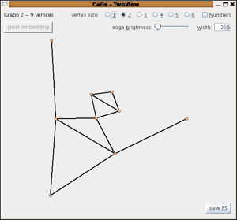

The general plane graphs window
The intention of the general plane graphs window is to allow the user to generate plane graphs with relatively few restrictions. In fact the options that can be used here also allow to generate very restricted classes of graphs -- e.g. all planar cubic graphs with maximum face size 6 -- but the very general generator used in this window will be very inefficient for strongly restricted classes.
The possible restrictions in this window are
- a lower bound between 1 and 5 for the minimal degree
- a lower bound between 1 and 3 for the connectivity
- to generate only graphs with connectivity number the given lower bound
- a lower and upper bound for the number of edges
- an upper bound for the face size

| choosing
a generator window |
||
| the
quadrangulations generators |
||